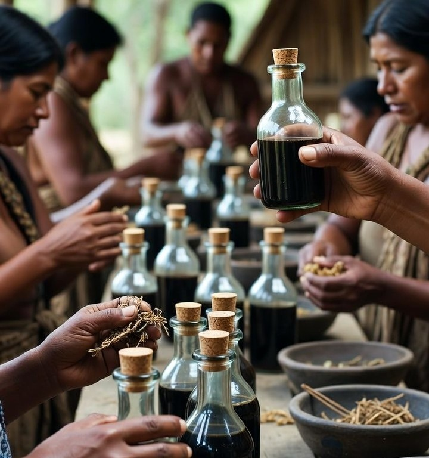
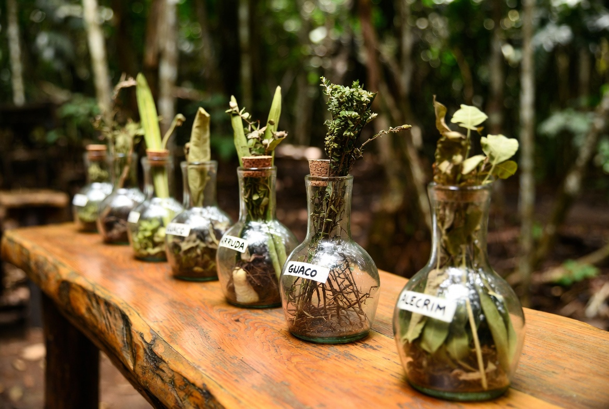

+880 Receitas de Garrafadas Medicinais transmitidas pelos povos originários do Brasil — para pressão, rims, coração, varizes, dor, insônia e muito mais.

🔒 Pagamento 100% seguro · Acesso imediato por e-mail · Garantia de 7 dias
Você se identifica?
Se você se identificou com qualquer um desses pontos, saiba: não é fraqueza, não é azar e não é idade. É o seu corpo pedindo o cuidado que ele merece — com o poder que a natureza já tem. O que você vai ver agora mudou a vida de mais de 12.000 famílias brasileiras.
A solução que você procurava
Enquanto a medicina moderna busca lucro com remédios caros e efeitos colaterais, os povos originários do Brasil já conhecem há gerações o segredo para um corpo saudável: 880 receitas medicinais ancestrais — garrafadas, tinturas, xaropes, pomadas, óleos e conservas preparadas com o poder puro da natureza.
Agora esse conhecimento sagrado, testado por séculos e transmitido de geração em geração, está nas suas mãos — organizado, completo e fácil de preparar na sua própria cozinha.

Transformações reais que você vai sentir
Prévia do conteúdo
Combine ervas nativas selecionadas e deixe macerar por 7 dias. Uso diário antes das refeições. Muitos usuários relatam equilíbrio significativo após 2 semanas.
10 gotas diluídas em água, 3x ao dia. Receita transmitida por gerações. Apoio natural que complementa o cuidado com a glicemia.
Massagem nas pernas por 5 minutos antes de dormir. Tradição indígena para circulação saudável. Pernas mais leves em dias.
Tudo isso por apenas…
🔒 Garantia de 7 dias ou seu dinheiro de volta
BÔNUS EXCLUSIVO
Valor: R$ 97,00 — GRÁTIS hoje para você!
Quem já está usando
"Minha pressão se estabilizou após 3 semanas usando a garrafada ancestral. Não acreditei no começo, mas o resultado falou por si. Recomendo demais!"
"Minha glicose estava em 170. Com as tinturas ancestrais e ajuste na alimentação, fui a 112. Meu médico ficou impressionado com os resultados naturais!"
"Sofria com varizes há 12 anos. Comecei o óleo de ervas há 6 semanas e as pernas estão visivelmente melhor. Nunca imaginei que seria tão simples!"
"Voltei a dormir bem depois de meses de insônia. A garrafada calmante indígena fez o que nenhum remédio conseguiu. Por R$ 9,90 foi o melhor investimento do ano!"
Se por qualquer motivo não gostar, basta enviar um e-mail e devolvemos 100% do seu dinheiro — sem perguntas, sem burocracia, sem demora.
Você tem 7 dias para testar sem nenhum risco.
Oferta especial de hoje
Imediatamente após o pagamento! Você recebe o link no e-mail em menos de 5 minutos.
Sim. São 100% naturais e baseadas em tradições milenares. Se você usa medicamentos, recomendamos consultar um profissional antes de usar como complemento.
A maioria usa plantas comuns encontradas em feiras, mercados, farmácias de manipulação ou que você mesmo pode cultivar.
Sim! Acesse do celular, tablet ou computador — online ou baixe para ler offline e imprimir quando quiser.
Garantia total de 7 dias. Pediu reembolso, devolvemos 100% — sem perguntas.